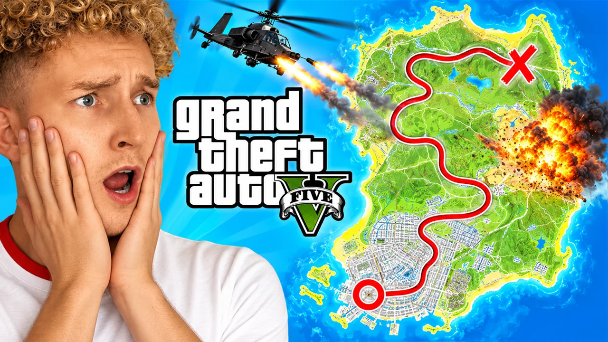
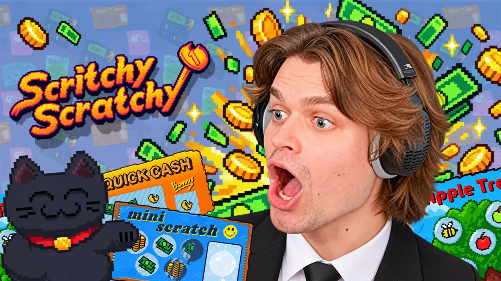
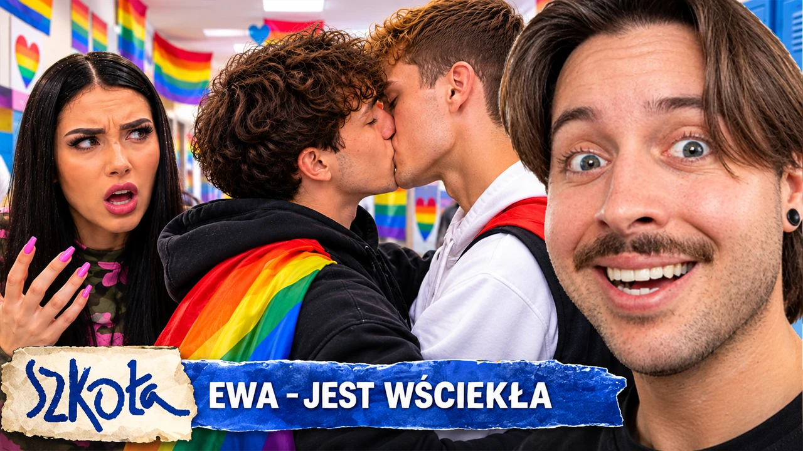
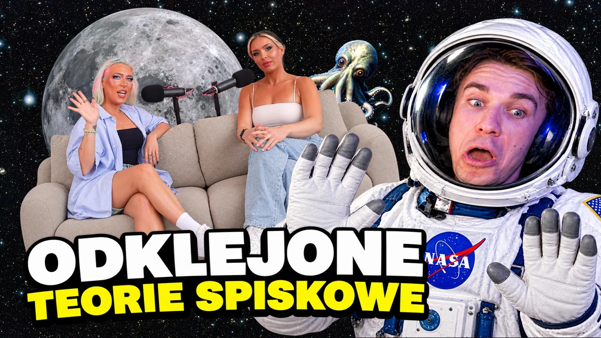
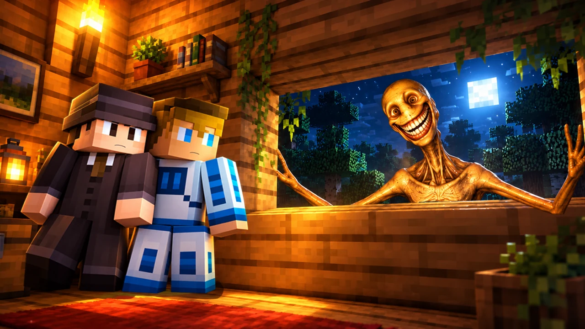
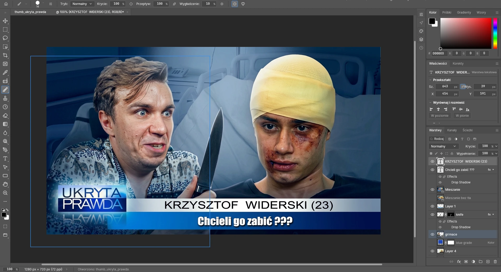
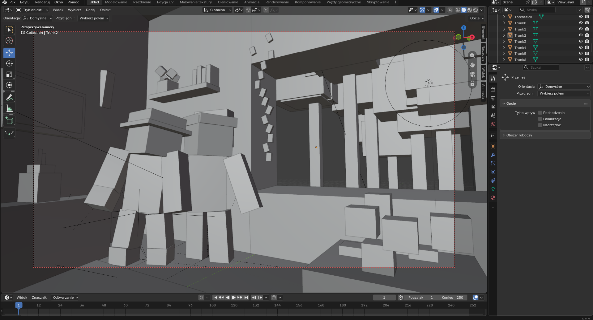

Twarz robi robotę
Duża, wyraźna reakcja. Widz od razu wie, o co chodzi, jaka to seria zanim w ogóle przeczyta tytuł.

Projektuję miniaturki do kanałów gamingowych, horrorów i seriali. Kontrowersja, emocje i czytelność w rozmiarze znaczka tak, żeby widz się zaciekawił.
Nigdy cała miniaturka nie jest wygenerowana. Chcesz całkiem bez AI? Wystarczy napisać. Zobacz praceKoncept Te prace robiłem dla siebie, do treningu i dla zabawy, do filmów, które już istnieją. To nie są zlecenia od tych kanałów.
Kliknij, żeby powiększyć albo sprawdzić w feedzie
Duża, wyraźna reakcja. Widz od razu wie, o co chodzi, jaka to seria zanim w ogóle przeczyta tytuł.

Każdą miniaturkę sprawdzam w małym rozmiarze i na telefonie. Jak coś się zlewa, poprawiam.

Te same belki, logo i kolory w każdym odcinku. Widz od razu wie, że to kolejna część jego serii.

Kluczowe słowa, które coś dodają do tytułu. Do tego kolory, które są wyraźne i zwracają uwagę więc z zwykłej ciekawości przeczytasz.

Ciepłe i zimne światło, poświaty, głębia. Horror ma wyglądać jak horror, a komedia jak komedia.

Gaming, horror, paradokumenty, commentary, true crime. Styl dopasowuję do kanału i jego widzów.
Używam AI, żeby nadążać za trendami, ale nigdy nie generuję nim całej miniaturki. Czasem dorobię jakiś przedmiot, postać w tle albo poprawię jakość zdjęcia. Cała reszta to normalna robota w Photoshopie.
Zanim zacznę, zastanawiam się, co widz ma zobaczyć. Wyraźna ekspresyjna twarz, kontrowersyjna sytuacja, trzy słowa lub belka. Reszta to kompozycja, światło i kontrast, tak żeby wszystko działało też na telefonie bo dużo osób ogląda tam YT.
Pomysł, retusz, kompozycja i napisy.
Belki, logo i kolory, które powtarzają się w każdym odcinku.
Postacie, potwory, światło i klimat.
Kilka wersji jednego pomysłu, żeby sprawdzić, która lepiej klika.
Narzędzia:

Wycinanie postaci, retusz, światło, kolory i napisy. Zwykle wychodzi z tego kilkanaście warstw z maskami.
Czasem jako dodatek: przedmiot, postać w tle albo lepsza jakość zdjęcia. Nigdy cała miniaturka.
Przy niektórych pracach najpierw stawiam scenę w Blenderze: postacie, kamerę i światło. Render to tylko szkic, a klimat, kolory i detale robię potem w Photoshopie.
Przesuń pasek, żeby porównać.

Chcesz bez AI? Po prostu napisz to w wiadomości.